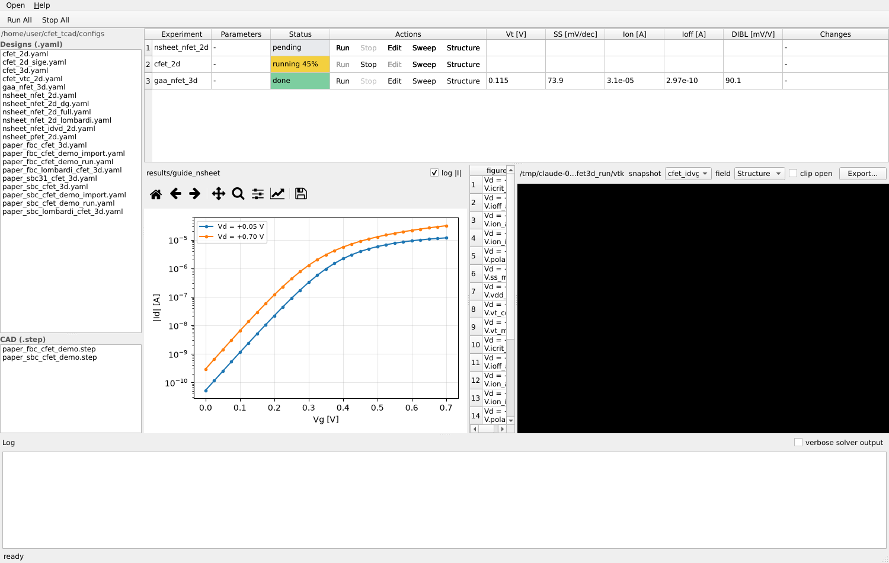
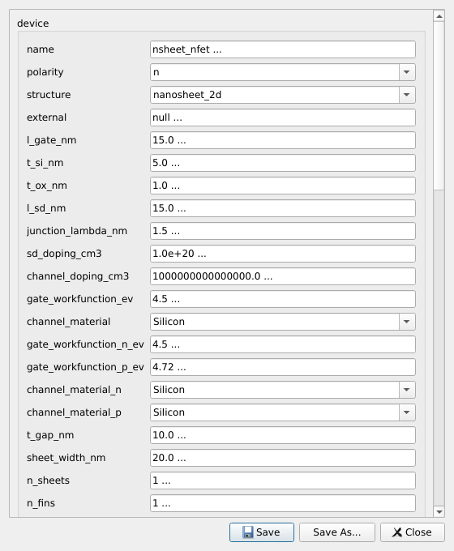
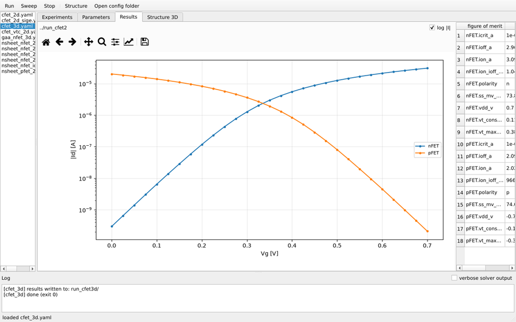
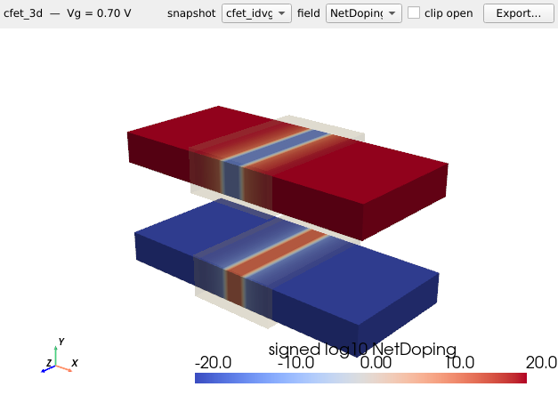
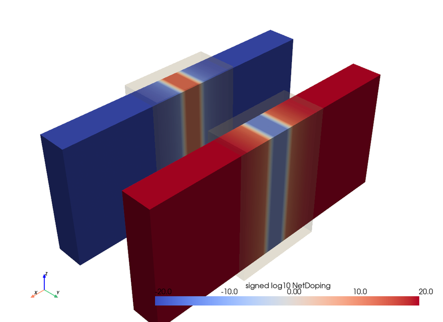
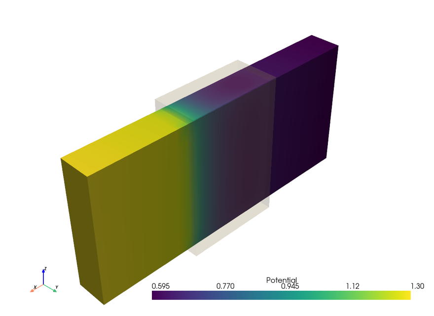
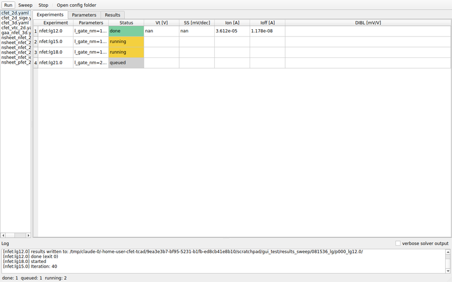
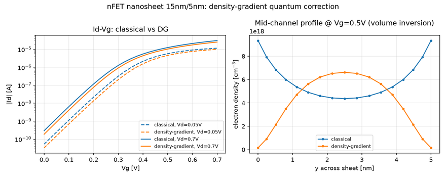
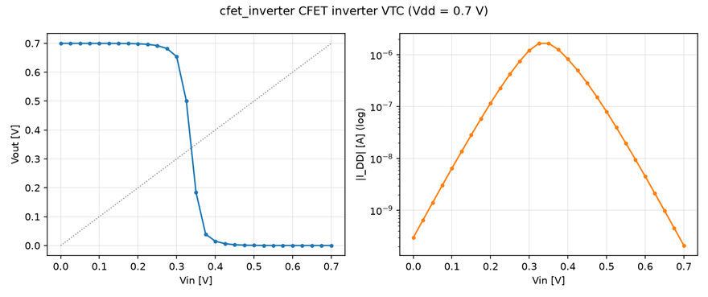

基于 Python、DEVSIM（漂移扩散求解器）与 gmsh（参数化网格）构建的 开源 CFET / 堆叠纳米片 TCAD 系统，桌面工作台交互范式对标 Synopsys Sentaurus。
| Sentaurus 组件 | STACKED CMOS TCAD 对应 |
|---|---|
| Structure Editor (SDE) | 参数化几何构建器 + Structure 3D 页 |
| Sentaurus Device (SDevice) | DEVSIM 漂移扩散引擎，含 CVT 迁移率与 density-gradient 量子修正 |
| Mixed-mode 混合仿真 | 反相器 VTC 实验（器件/电路耦合 Newton） |
| Sentaurus Visual / Inspect | Results 页（曲线 + 参数提取）、Structure 3D 页（VTK 渲染） |
| Workbench (SWB) | Experiments 实验表格、并行扫描 / DOE |
# 系统库 (Debian/Ubuntu) sudo apt-get install libopenblas0 libglu1-mesa pip install -e '.[gui,viz]' # GUI (PySide6) + 3D 渲染 (PyVista) cfet-tcad-gui # 在项目根目录启动
包在导入时自动为 DEVSIM 定位 OpenBLAS，无需设置任何环境变量。安装后
可运行一次 pytest（约 3 分钟）确认环境正常。
工作流：左侧 YAML 列表上方显示当前配置文件夹路径（菜单栏 Open 可换文件夹）。右键某个 YAML → Add 将其作为 待仿真（pending）实验加入表格 → 点击该行自己的 Run 按钮（或工具栏 Run All）→ 看行变绿 → 双击该行, Results（左下）与 Structure 3D（右下）同窗加载。 三个面板合并在同一个窗口里，分割条均可拖动调整尺寸。
每行一次仿真，每行通过自己 Actions 列里的按钮独立驱动： Run（开始；对已结束的行是原地重跑 — 同一输出目录，旧结果 被覆盖）、Stop、Sweep（以该行配置为基展开 DOE 网格）、 Structure（秒级网格预览，不求解）。状态色块沿用 Sentaurus Workbench 约定 — 浅灰待仿真（已加入、等 Run）、灰 排队、黄运行中、绿完成、红失败、灰蓝已停止 — Vt、SS、Ion、Ioff、DIBL 各列在 运行结束后自动从提取结果回填。工具栏 Run All 启动所有 待仿真/已停止/失败的行；Stop All 全部停止。

双击左侧某个 YAML（或右键 → Edit）弹出其参数编辑窗口。 表单由配置模式自动生成并按节分组。枚举字段（结构、迁移率模型、量子 模型、材料）为下拉框；每次保存都经过完整校验，笔误在求解器启动前就会被 拦下。Save 覆盖当前文件；Save As… 把修改另存为 新的 YAML。右键菜单还提供 Copy…（改名复制一份）与 Delete（确认后删除文件）。

从运行目录的 CSV 交互重绘曲线（缩放/平移工具栏、log/linear 切换）， 右侧为展平的参数提取表。四种实验类型均可正确呈现：转移特性 (Id–Vg)、输出特性 (Id–Vd)、CFET 共栅双管、反相器 VTC。

器件的真 VTK 渲染。每行的 Structure 按钮对该实验的配置做
秒级预览（建网格 + 掺杂、不求解 — 即 SDE 的看结构工作流）；
双击已完成的实验行则加载其偏压点快照。下拉框切换快照（偏压点）与着色字段：
Structure（材料）、NetDoping（对称对数）、
Potential、Electrons/Holes（对数）、
Lambda_n/p（量子势）。勾选 clip open 沿中面剖开器件
露出沟道。

渲染示例 — 3D CFET 堆叠按净掺杂着色（红 = pFET 受主源漏、蓝 = nFET 施主源漏、半透明栅氧化壳），以及环栅纳米片 ON 态的电位场：


实验行的 Sweep 按钮以该行配置为基打开 DOE 对话框。每行一个
参数，格式 路径=v1,v2,…；多行默认取笛卡尔积，勾选
zip 则各值列表成组同步推进。扫描点展开为表格中的独立
待仿真行 — 点 Run All（或逐行 Run）后由限并发
进程池执行，一行行依次变绿：

device.l_gate_nm=12,15,18,21 # 栅长缩放研究 # zip 成组示例: SiGe 组分扫描, 每个组分同步重调栅金属保持等 Vt device.channel_material_p=Silicon,SiGe15,SiGe30,SiGe45 device.gate_workfunction_p_ev=4.72,4.655,4.59,4.525
Import CSV… 按钮可从设计点表格填充对话框（每行一次
仿真,列名为点分配置路径）— 上次扫描导出的
sweep_summary.csv 改一改即可直接回灌,状态/FOM 列自动
忽略。命令行等价: cfet-tcad sweep base.yaml --points
doe.csv。
device.structure | 说明 |
|---|---|
nanosheet_2d | 2D 双栅沟道纵截面 — GAA 纳米片的标准 2D 近似。最快，适合方法学验证与批量扫描。 |
gaa_3d | 完整 3D 环栅单纳米片：硅条被氧化壳四面包裹，单一环栅接触。 |
cfet_2d | CFET 堆叠：nFET 片叠在 pFET 片之上，四个栅接触共栅（每片可用不同栅金属），两管在同一耦合 Newton 系统中求解。 |
cfet_3d | 两个堆叠的 3D 环栅纳米片共栅 — 完整形态的 CFET。 |
常用几何旋钮（单位 nm）：l_gate_nm、t_si_nm、
t_ox_nm、l_sd_nm、sheet_width_nm、
t_gap_nm（CFET 片间栅金属厚度）。掺杂：
sd_doping_cm3、channel_doping_cm3、
junction_lambda_nm（高斯结尾长度）。Vt 由栅金属
设定：单管用 gate_workfunction_ev，CFET 用
gate_workfunction_n_ev/_p_ev。
设计导入 — 外部网格。设
structure: external 可直接仿真用户自备的 gmsh MSH 2.2
ASCII 网格（坐标单位 cm）。device.external 段把文件里的
物理组映射到 region / contact / interface,并为每个硅区指定掺杂方式
（lateral_sd 解析剖面 / uniform 均匀 /
expression 任意 DEVSIM x/y/z 表达式）：
device:
structure: external
external:
mesh_file: my_device.msh # 相对配置文件所在目录
dimension: 2
regions: {bulk: Silicon, gox: Oxide}
contacts: {source: bulk, drain: bulk, gate: gox}
interfaces: {si_ox: [bulk, gox]}
doping:
bulk: {profile: uniform, donors_cm3: 1.0e17, acceptors_cm3: 0}
STEP(CAD)导入。.step/.stp 装配体
可转换为可仿真网格:STEP 只有几何,所以需要一份小的映射 spec——给每个
实体指定 region(选择器三选一:label 对 CAD 零件名做正则、
volume 体编号、bbox 包围盒)、用 bbox 放置
contacts、并给出 unit_cm(1 个 CAD 单位等于多少 cm:nm 为
1e-7、µm 为 1e-4、mm 为 0.1)。GUI 里 .step 文件直接出现在左侧
文件列表,双击(或右键 → Convert to mesh…)弹出
预填了体对照表和 spec 模板的对话框,Convert 生成 .msh 与一份
可直接跑的 starter 配置。命令行:cfet-tcad import-step
model.step --list 打印体对照表,cfet-tcad import-step
spec.yaml 执行转换。所有实体先做布尔碎片化保证相邻区域共形
划网,且划网在 CAD 原生坐标进行、成网后再缩放到 cm——纳米尺寸不会
撞上 CAD 内核的几何容差。
设计导出。Structure 3D 标签页的 Export… 按钮
（或 cfet-tcad structure cfg.yaml --stl dev.stl --obj
dev.obj）把器件几何导出为 STL/PLY/VTP 表面网格,或带材质颜色的
OBJ+MTL,供 CAD 与展示工具使用。仿真结果本身始终同时落盘 CSV、
fom.json、VTK（VisIt/ParaView）与 gmsh .msh。
多沟道复制(cfet_3d): n_fins /
fin_pitch_nm 每器件横向并排多个 fin(论文式 fin 阵列);
n_stacked_sheets / sheet_pitch_nm 纵向叠层多个
纳米片。复制体共享器件的 region 与接触,下游全部照常工作。
n_sheets 仍是纯电流乘数(不产生几何)。
ParaView: 直接打开 vtk/*.pvd(timestep=偏压值,
可动画播放整条扫描);仓库附 examples/paraview_macro_fig8.py
宏,一键完成剖切 + 迁移率着色,并可选开 OSPRay 光追。
| 设置项 | 选项 | 说明 |
|---|---|---|
physics.mobility_model |
const、doping、doping_vsat、
lombardi_vsat |
doping_vsat：Caughey–Thomas 掺杂依赖 + 速度
饱和。lombardi_vsat 增加 CVT 垂直场表面散射
（element 级装配，2D/3D 均支持）— 默认器件上线性区
Ion 约降 25%。 |
physics.quantum_model |
none、density_gradient |
输运载流子的 Bohm 量子势，含氧化层势垒 Robin 界面条件；产生
体反型与 Vt 正移（tsi=5 nm 时约
+15–20 mV）。强度经 dg_gamma_n/p
标定。 |
| 组合 | lombardi_vsat +
density_gradient |
Sentaurus 仿真先进节点器件的默认"全物理"组合；两种效应近似 乘性叠加、无病态串扰。 |
device.channel_material（CFET 用 _n/_p） |
Silicon、SiGeNN |
SiGeNN = 应变 Si1-xGex，NN 为
Ge 百分比（0–50），参数随组分连续插值。改组分时需同步重调
pFET 栅金属（禁带变化移动能带参考）。 |
默认 15 nm nFET 上经典 vs density-gradient 对比 — 转移特性 曲线与沟道中部载流子分布（体反型）：

simulation.type | 功能 | 关键设置 |
|---|---|---|
idvg | 对 vd 中每个漏压扫栅；提取 Vt（恒流法与最大 gm 法）、SS、Ion/Ioff，给两个 Vd 时输出 DIBL。 | vd、vg_start/stop/step |
idvd | 对 vg 中每个栅压扫漏（输出特性）。 | vg、vd_start/stop/step |
cfet_idvg | CFET 共栅扫描（CMOS 对偏置）；一次耦合求解同时产出 n/p 两条转移曲线与双份提取。 | vdd、vg_* |
cfet_vtc | 反相器电压传输特性：Vout 为浮空电路节点自洽求解（器件/电路混合）。提取 VM、增益、噪声容限。 | vdd、vg_* |

行处于 running 状态时,Status 单元格实时显示进度百分比 (已测偏压点/总点数)。除每行自带的按钮外,右键任意行还可 Stop(停止该实验,行变灰蓝色 "stopped")、Remove from list(移除表格行,磁盘文件保留)、Open results folder (打开结果目录)。工具栏 Stop All 仍为全部停止。
cfet-tcad run <config.yaml> [-o outdir] # 完整流水线 cfet-tcad sweep <config> -p 路径=V1,V2 [-p ...] [--zip] [-j N] cfet-tcad structure <config> [-o dir] [--png img.png] # 免求解结构预览 cfet-tcad mesh <config> # 仅生成 gmsh 网格
每次运行在输出目录产生：idvg.csv /
idvd.csv / vtc.csv（全部偏压点）、
*.png（曲线图）、fom.json（提取的器件参数）、
vtk/（场分布快照 — 也可用 VisIt/ParaView 通过
.pvd/.visit 索引打开，扫描偏压即 timestep）。
lombardi_vsat 或 density_gradient 增加约
30–50%。结构预览秒级。QT_QPA_PLATFORM=offscreen 下运行；3D 渲染回退 OSMesa 或
xvfb-run。本指南引用的全部数字均为随包示例配置的真实运行输出，可由测试套件 复现。